Snake
This project was developed in an academic context of Project III, in Instituto Politécnico do Cávado e do Ave. The objective was to develop a calendar for an existing company/corporation. The chosen company was "Agências Abreu", one of the most known travel agents in Portugal. The purpose of this calendar was to gather the lowest destination prices available from 2012 to 2013, so people could check easily which travels are the cheapest, without having the hassle to search all over their official website. It is named "Lowcost Calendar", and there are national and international travels available. Two supports were developed: a ticket folder, which would be available directly at the travel agency, and an interative application that would be available in their official website. The tickets can be separated, in a way that a costumer chooses and buy the desired ticket, and at the same time, have a discount.
 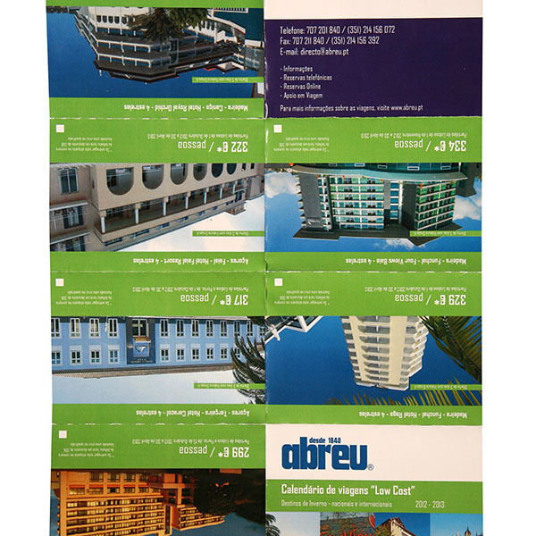
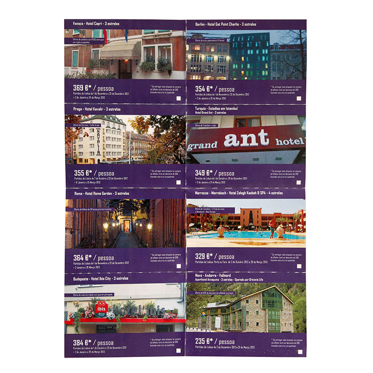
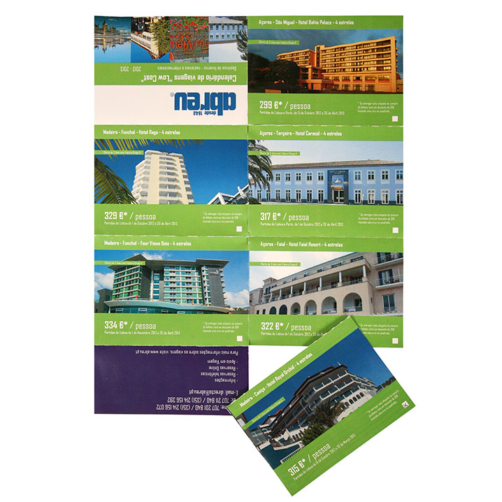
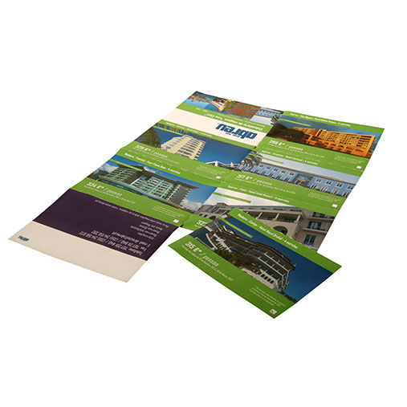
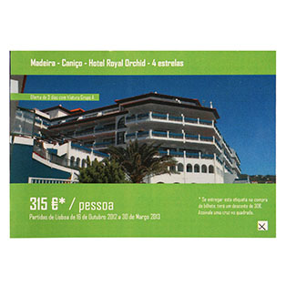
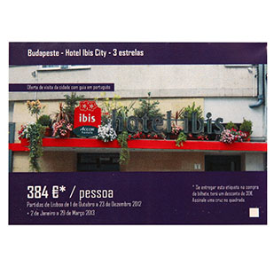
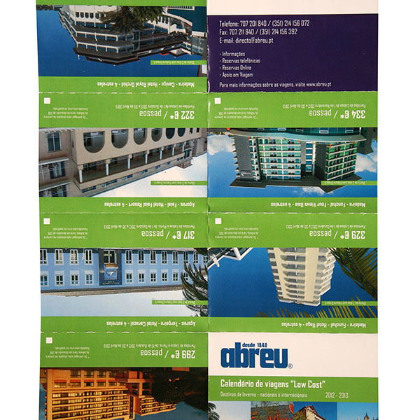
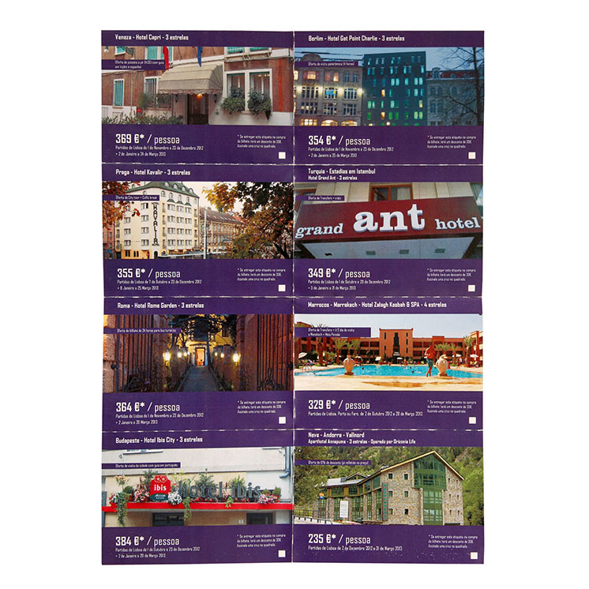
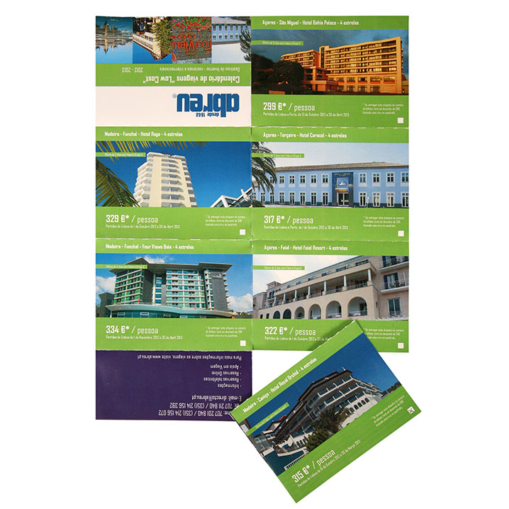
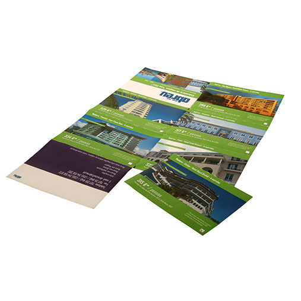
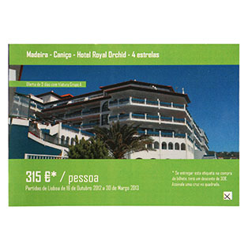
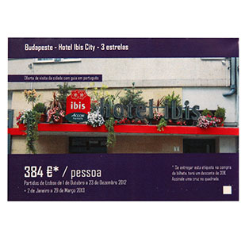